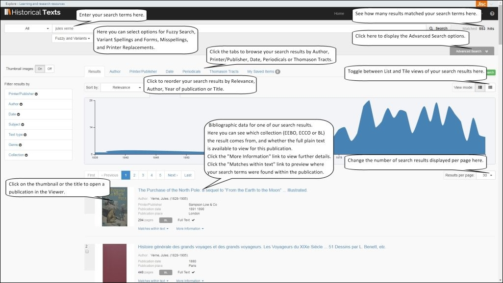
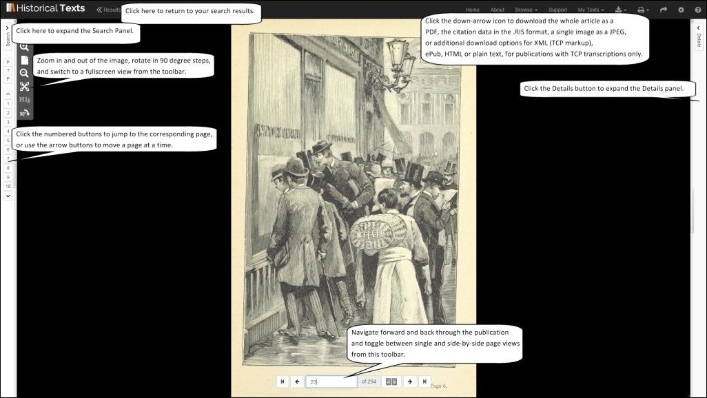

<div class="row">
    <div class="col-xs-12 topSpace">
        <div class="sideMenu">
            <div class="title">Support</div>
            <ul>
                <li><a href="/support/">Support Home</a></li>
                <li><a href="/help/">Help File</a></li>
                <li><a href="/librarians/">Librarians</a></li>
                <li><a href="/faq/">FAQ</a></li>
				<li class="selected"><a href="">Quick Reference Guide</a></li>
				<li><a href="/features/">Features</a></li>
            </ul>
        </div>

        <div class="support">

            <ol class="breadcrumb">
                <li><a href="/support/">Support Home</a></li>
                <li class="active">Quick Reference Guide</li>
            </ol>

            <h1>Quick Reference Guide</h1>
            
        

<p>This is the online version of the Historical Texts Quick Reference Guide. If you wish, you can download this guide as a PDF file for offline viewing&#58; <a href="http://historicaltexts.jisc.ac.uk/files/HT-QRGv3.pdf" target="blank" title="Historical Texts Quick Reference Guide PDF"><b> Quick Reference Guide</b></a> &#40;PDF, 1127KB&#41;. 
<br>You can click on any of the images to see a bigger version for easier viewing.</p>

<p>The Quick Reference guide will help users to get going on the Historical Texts service as quickly as possible. It isn&#39;t intended to cover every feature or possible usage scenario.
<br>If you have any queries or require assistance please contact the Historical Texts helpdesk at <a href="mailto:historicaltexts@jisc.ac.uk">historicaltexts@jisc.ac.uk</a></p>

<p>Historical Texts contains three collections&#58; <strong><a href="../collections/">Early English Books Online &#40;EEBO&#41;</a>, <a href="../collections/">Eighteenth Century Collections Online &#40;ECCO&#41;</a></strong> and the <strong><a href="../collections/">British Library 19th Century Collection &#40;BL&#41;.</a></strong></p>

<br>

<h2>Search View, with results shown below</h2>
<p>Enter your search terms in the Search field and click the Search button to run it. The number of matched results will be shown in the top right of the screen.
<br>You can select search options for fuzzy searching, variant spellings and forms, misspellings and printer replacements. 
<br>You can reorder your search results by Relevance, Author or Year of Publication. 
<br>You can switch between a Tile or a List type of view, and change the number of results displayed per page.
<br>Bibliographic data for the results is shown, including which collection it is from and whether the full plain text is available for it. 
<br>Clicking the title or thumbnail or the title of a result will open it in the Viewer. 
<br>Clicking the Advanced Search button will display more search options.</p> 
<a href="../images/support/screenshots/HT-QRG1-1920px.jpg" target="_blank"></a>

<br>
<br>

<h2>Search View, expanded to show Advanced Options</h2>

<p>Choose which fields to search on using the drop&#45;down arrow. You can choose from All Fields, Title, Author, Printer&#47;Publisher, Place of Publication, Bibliographic Number, Language, Illustration Description, Subject, Genre, Text type or Collection.
<br>Specify restrictions on your search including which collections to search, whether or not results are illustrated, dates and ranges, and whether to search the full text, bibliographic information, or both.
<br>You can add rows to include additional search terms, and choose which fields they search on. The MUST, MUST NOT and SHOULD drop down option can be used with additional rows to create conditional searches. 
<br>To clear the search form and start again, click the Reset button.
<br>Results from your current search are still shown below. Use the scroll button on the right hand side to move down and view them.
<br>Click the tabs to browse through your search results by Author, Printer&#47;Publisher, Date, Periodicals and Thomason Tracts, or to access My Saved Items.
<br>The Histogram tool shows you a graphical distribution of your search results over time. You can click and drag to make finer selections on the graph itself.
</p>

<a href="../images/support/screenshots/HT-QRG2-1920px.jpg" target="_blank"></a>

<br>
<br>

<h2>Using the Viewer to look at a publication</h2>

<p>When using the Viewer, you can navigate through the publication and toggle single or side by side page views using the toolbar near the bottom&#45;middle of the page.
<br>You can zoom in or out of the image, rotate in 90 degree steps, and switch to a fullscreen view from the toolbar to the left hand side of the screen.
<br>Click the Search button on the left hand side to open the Search Panel for more options.
<br>Click the Down Arrow icon near the top right of the screen to see options for downloading the whole publication as a PDF, a single page as a JPEG, or the citation data in the .RIS format.
<br>Click the Details button to open the Details Panel for more options. The T icon indicates that the full text is available for this publication.
<br>Click the Results link near the top to return to your search results list.
</p>

<a href="../images/support/screenshots/HT-QRG3-1920px.jpg" target="_blank"></a>

<br>
<br>

<h2>The Viewer, with the Search and Details panels open</h2>
<p>In the Search Panel to the left, you can switch between thumbnails, pages where your search was matched and a list of related publications. Click a thumbnail to jump to that page immediately.
<br>Click the Right Arrow icon near the top right of the screen to view a permanent URL that linsk directly back to this publication.
<br>In the Details Panel to the right you can click the tabs to toggle between bilbiogrpahic data for the publication, the full text &#40;where available&#41;, table of contents data and personalised tags.
<br>The Search Panel, Viewing Panel and Details Panel can all be used simultaneously if desired.
</p>


<br>

<a href="../images/support/screenshots/HT-QRG4-1920px.jpg" target="_blank"></a>

<br>
<br>
        </div>
        </div>
    </div>